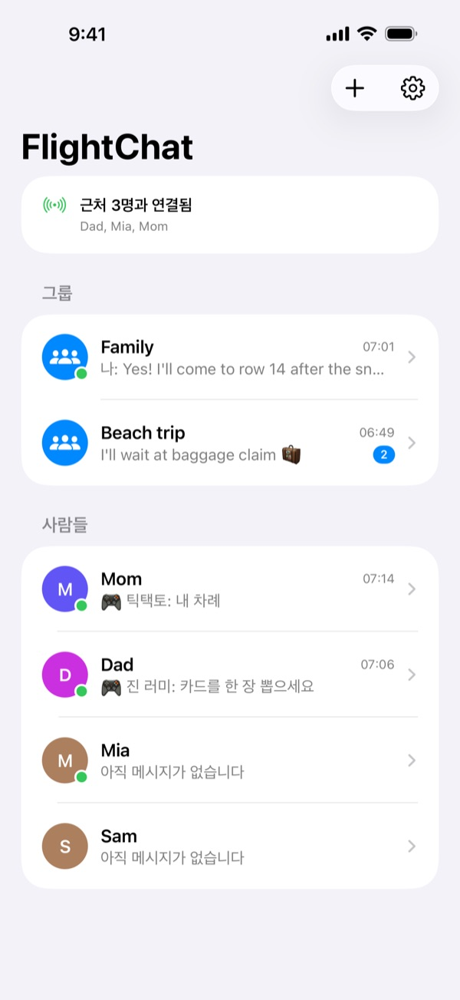
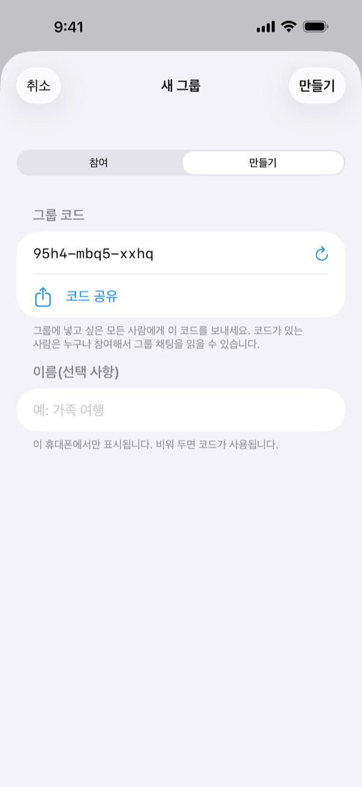
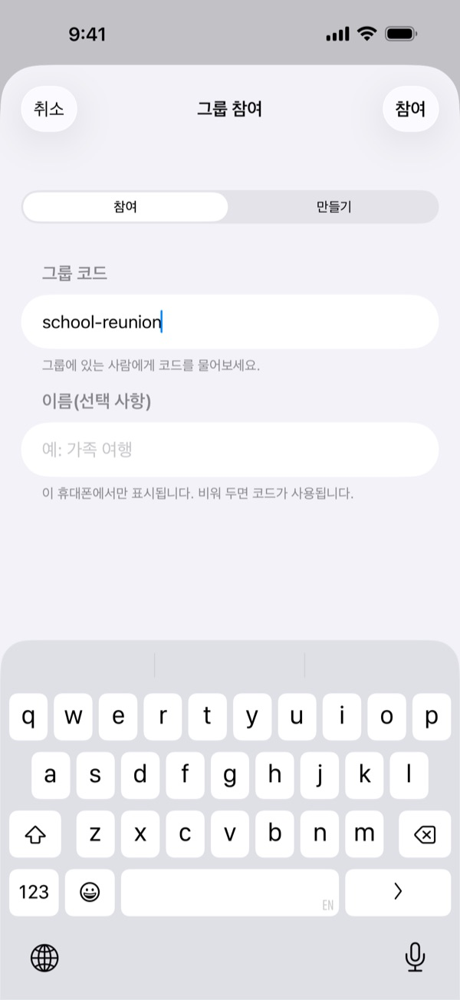
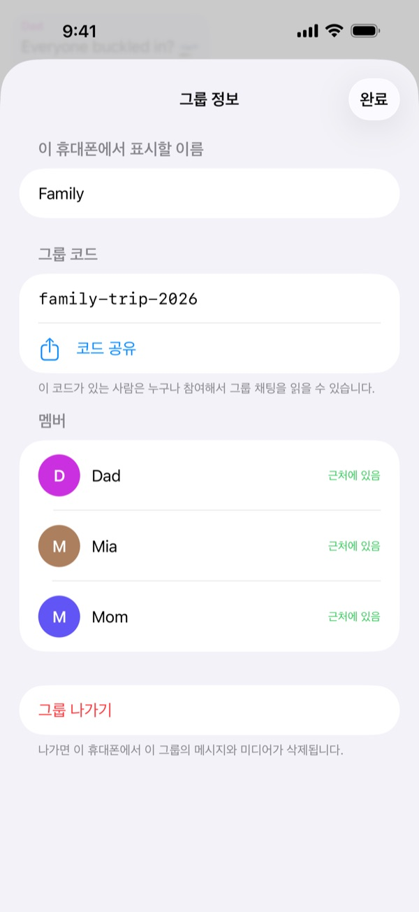
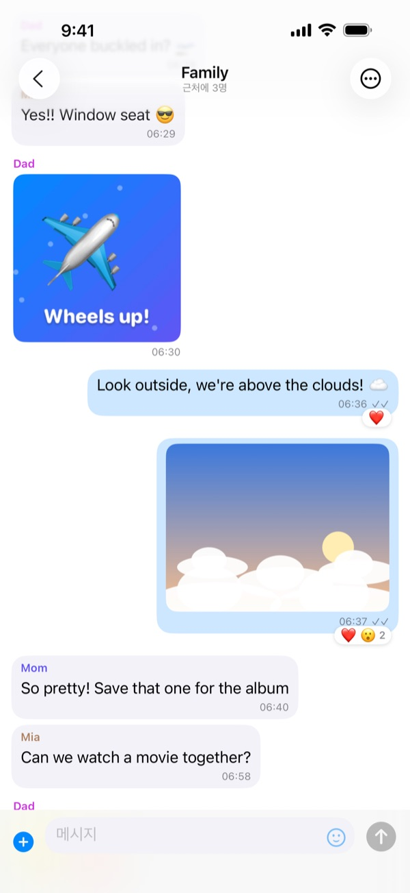
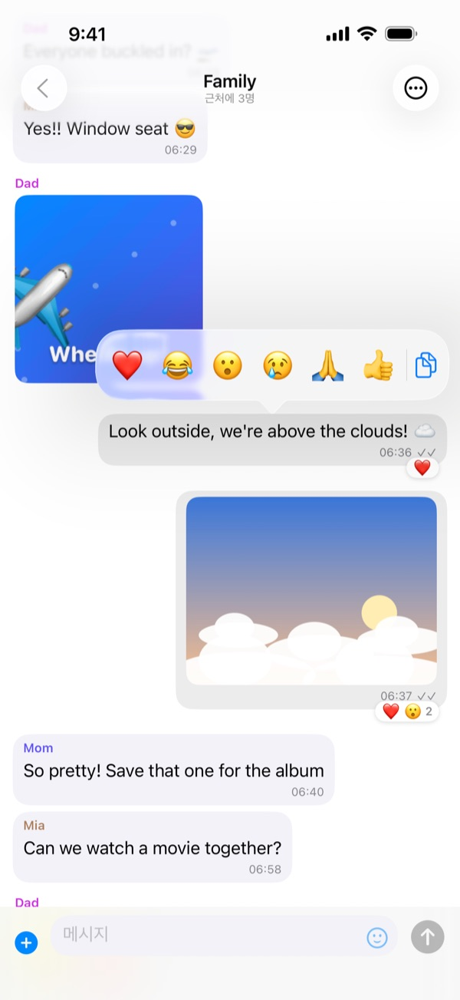
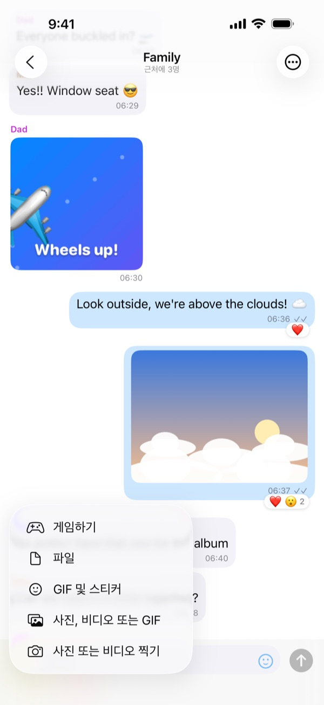
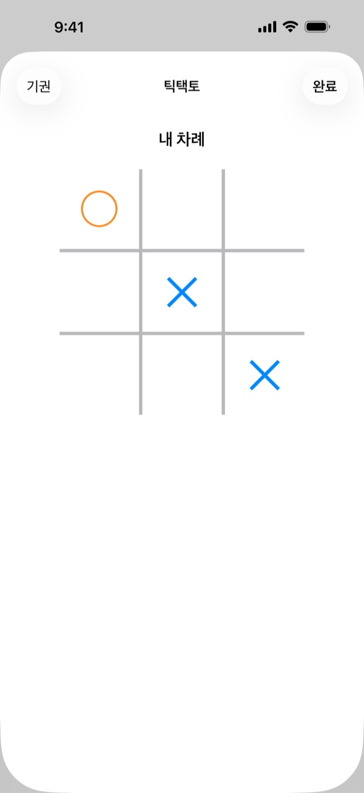
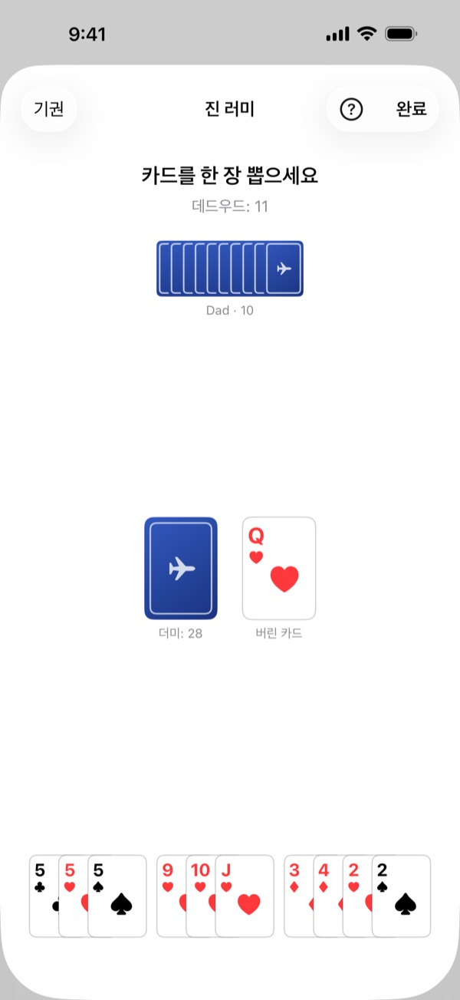
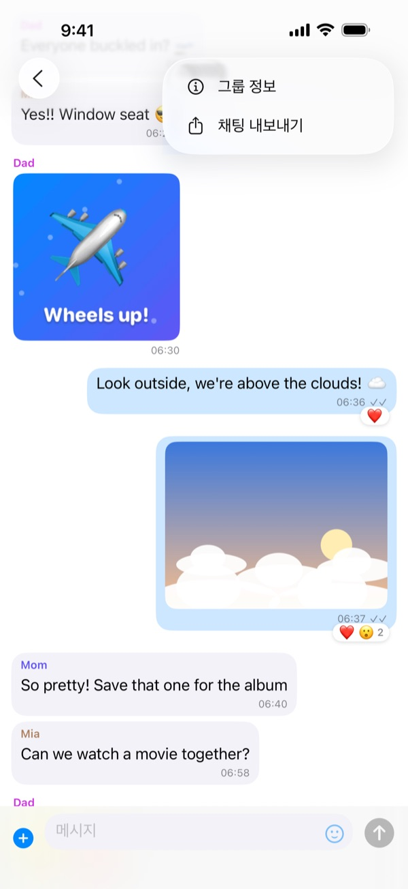

비행 전에
집이나 탑승구에서 함께 있을 때 모두 준비해 두세요:
- 그룹의 모든 휴대폰에 FlightChat을 설치하세요.
- 한 사람이 그룹을 만들고 문자 메시지 등으로 다른 사람들에게 코드를 공유합니다.
- 나머지 사람들은 그 코드로 그룹에 참여합니다.
- 테스트 메시지를 보내 모두 받는지 확인하세요.
FlightChat을 처음 열 때 로컬 네트워크의 기기를 찾도록 허용하세요. 허용하지 않으면 그룹을 찾을 수 없습니다.
기내에서
- 평소처럼 에어플레인 모드를 켜세요.
- 제어 센터를 열고 Wi-Fi와 Bluetooth를 다시 켜세요. 네트워크에 연결할 필요는 없습니다.
- FlightChat을 여세요. 채팅 목록 맨 위에 연결된 사람이 표시됩니다.
FlightChat이 열려 있을 때만 휴대폰이 연결됩니다. 앱으로 돌아오면 자동으로 다시 연결되어 놓친 내용을 받아옵니다.

그룹
그룹은 같은 코드를 입력한 모든 사람이 함께 쓰는 채팅입니다. 가족용, 같은 항공편의 친구용 등 최대 10개 그룹에 동시에 참여하고 모두와 연결된 상태를 유지할 수 있습니다.
그룹 만들기
- 채팅 목록에서 +를 탭한 다음 만들기를 탭하세요.
- FlightChat이 추측하기 어려운 코드를 만들어 줍니다. 원하면 그룹 이름을 지정하세요.
- 코드 공유를 탭해 다른 사람들에게 코드를 보낸 다음 만들기를 탭하세요. 나중에 그룹 정보에서 공유할 수도 있습니다.
그룹 참여하기
+를 탭한 다음 참여를 탭하고 받은 코드를 입력하세요. 대소문자는 구분하지 않습니다.
그룹 이름 변경, 공유 또는 나가기
그룹 채팅을 열고 ⋯을 탭한 다음 그룹 정보를 탭하세요. 여기서 내 휴대폰에서의 그룹 이름 변경, 코드 확인 및 공유, 멤버 확인, 그룹 나가기를 할 수 있습니다. 그룹에서 나가면 그 그룹의 메시지와 미디어가 휴대폰에서 삭제됩니다.
코드는 비공개로 유지하세요. 코드가 있는 사람은 누구나 그룹에 참여해 채팅을 읽을 수 있습니다.



채팅하기
- 그룹 채팅과 1:1 채팅: 그룹마다 채팅이 있습니다. 사람들에는 그룹을 함께하는 모든 사람이 표시됩니다. 한 사람에게만 메시지를 보내려면 그 사람 이름을 탭하세요.
- 사진, 비디오, GIF, 파일: 메시지 입력란 옆의 +를 탭하세요. 사진 또는 비디오 찍기로 카메라를 사용하거나(비디오는 최대 2분) 이미 있는 항목을 선택하세요. 스티커와 GIF는 스마일 아이콘을 탭하세요.
- 반응: 메시지를 길게 누른 다음 이모티콘을 선택하세요. 여기서 텍스트를 복사할 수도 있습니다.
- 전체 화면: 사진이나 비디오를 탭하세요. 휴대폰을 가로로 돌리면 더 크게 볼 수 있습니다. 공유 버튼으로 저장하세요.
- 체크 표시: ✓는 메시지가 저장되어 연결된 사람에게 전송되었음을 뜻합니다. ✓✓는 받을 사람 모두에게 전달되었음을 뜻합니다.
- 근처에 없나요? 연결되지 않은 사람에게 보낸 메시지는 다시 연결되면 전송됩니다.



게임
1:1 채팅에서 상대와 간단한 게임을 해 보세요: +를 탭한 다음 게임하기를 탭하고 게임을 고르세요. 채팅에 두 사람 모두에게 게임 카드가 나타나며, 탭하면 플레이할 수 있습니다. 끝나면 재대결을 탭해 상대가 먼저 시작하는 새 게임을 할 수 있습니다. 채팅에서 같은 게임이 이미 진행 중이면 다시 고를 때 그 게임이 열립니다.
- 틱택토: 번갈아 ✕와 ◯를 놓습니다. 세 개를 한 줄로 놓으면 이깁니다.
- 사목: 번갈아 열에 말을 떨어뜨립니다. 가로, 세로, 대각선으로 네 개를 이으면 이깁니다.
- 가위바위보: 두 사람이 동시에 고릅니다. 둘 다 고르기 전에는 어느 휴대폰도 상대의 선택을 알 수 없습니다.
- 체커: 대각선으로 움직이고 뛰어넘어 잡습니다. 킹은 어떤 거리든 날아갑니다.
- 백개먼: 말 15개를 홈으로 모아 빼내세요. 주사위는 자동으로 굴려집니다.
게임은 상대에게만 전송됩니다. 한 사람이 범위를 벗어나도 게임은 기다렸다가 휴대폰이 다시 연결되면 이어집니다.

카드 게임
카드 게임도 같은 방법으로 시작합니다: +를 탭한 다음 게임하기. 게임이 시작되면 카드를 섞고, 각자 화면 아래쪽에 있는 자기 패만 볼 수 있습니다. 더미를 탭해 카드를 뽑고, 카드를 탭해 냅니다. 지금 낼 수 있는 카드는 살짝 올라와 있습니다.
- 전쟁: 각자 맨 위 카드를 뒤집고, 높은 카드가 두 장을 모두 가져갑니다(에이스가 가장 높음). 비기면 다음 라운드의 승자가 그 카드도 가져갑니다. 26라운드가 끝나면 카드를 더 많이 딴 사람이 이깁니다.
- 크레이지 에이트: 각자 7장으로 시작합니다. 더미 맨 위 카드와 무늬나 숫자가 같은 카드를 내거나, 카드를 뽑습니다. 8은 아무 카드 위에나 낼 수 있고 다음 무늬를 정할 수 있습니다. 먼저 카드를 다 내는 사람이 이깁니다.
- 진 러미: 각자 10장으로 시작합니다. 내 차례에 더미나 버린 카드에서 한 장을 가져온 다음 한 장을 버립니다. 같은 숫자 3~4장이나 같은 무늬로 3장 이상 이어지는 카드로 조합을 만드세요. 남은 카드가 10점 이하이면 노크해서 이번 판을 끝낼 수 있고, 남은 카드가 없으면 진입니다.
- 3~4명 그룹 게임: 그룹 채팅에서 +를 탭하고 게임하기를 탭한 다음 크레이지 에이트나 진 러미를 고르세요. 함께 할 사람을 2~3명 고르고(근처에 있는 사람은 이미 선택되어 있음) 나눠 주기를 탭합니다. 차례대로 돌아가며 플레이합니다. 크레이지 에이트는 모두 5장, 진 러미는 3명이면 10장씩, 4명이면 7장씩 받고, 누군가 노크하면 나머지 모두가 카드를 붙이고 점수를 셉니다. 그룹의 모든 사람이 게임을 볼 수 있지만 카드는 플레이어만 받으며, 아무도 다른 사람의 패를 볼 수 없습니다.
내 패는 내 휴대폰 화면에만 보입니다. 상대는 카드가 몇 장인지만 볼 수 있고 어떤 카드인지는 볼 수 없습니다. 진 러미가 끝나면 점수를 확인할 수 있도록 두 사람의 패가 모두 공개됩니다.

FlightChat Pro
FlightChat은 채팅, 사진, 스티커, 대부분의 게임을 포함해 무료입니다. FlightChat Pro는 한 번만 구입하면 되는 항목으로, 백개먼, 크레이지 에이트, 진 러미를 시작할 수 있게 해 줍니다. 구입하기 전에는 게임 목록에서 이 게임들에 Pro가 표시됩니다.
Pro 게임을 시작하는 사람만 Pro가 필요합니다. Pro가 없는 친구도 내가 시작한 게임에 1:1이나 그룹 채팅에서 참여해 플레이할 수 있습니다.
설정 → FlightChat Pro에서 또는 Pro 게임을 탭해 구입하세요. 한 번만 결제하며 구독이 아니고, 가족 공유로 가족과 함께 쓸 수 있습니다. 구입하려면 인터넷이 필요하니 비행 전에 구입하세요. 구입한 뒤에는 오프라인에서도 Pro를 쓸 수 있습니다. 새 iPhone에서는 구입 내역 복원을 탭하세요.
게임 규칙
FlightChat의 모든 게임 규칙입니다. 게임 중에 게임 방법을 탭하면 그 게임의 규칙으로 바로 이동합니다.
틱택토
- 두 사람이 3 × 3 칸에 번갈아 둡니다. 먼저 시작하는 사람이 ✕, 다른 사람이 ◯입니다.
- 내 차례에 빈칸을 탭해 내 표시를 놓습니다.
- 가로, 세로, 대각선으로 내 표시 세 개를 이으면 이깁니다. 먼저 칸이 다 차면 무승부입니다.
사목
- 두 사람이 가로 7열, 세로 6줄 판에 번갈아 말을 떨어뜨립니다. 먼저 시작하는 사람이 빨간색, 다른 사람이 노란색입니다.
- 내 차례에 열을 탭하면 말이 그 열의 가장 아래 빈칸으로 떨어집니다. 가득 찬 열에는 더 넣을 수 없습니다.
- 가로, 세로, 대각선으로 내 말 네 개를 이으면 이깁니다. 먼저 판이 다 차면 무승부입니다.
가위바위보
- 두 사람이 동시에 바위, 가위, 보 중 하나를 고릅니다.
- 바위는 가위를, 가위는 보를, 보는 바위를 이깁니다. 같은 것을 내면 무승부입니다.
- 상대도 고를 때까지 내 선택은 봉인되어 있어서, 누구도 상대의 선택을 먼저 볼 수 없습니다.
체커
- 각자 8 × 8 판의 어두운 칸에 말 12개를 두며, 내 말은 항상 아래쪽에 있습니다. 먼저 시작하는 사람이 밝은 말을 씁니다.
- 말은 대각선 앞으로 한 칸 움직입니다. 바로 옆의 상대 말을 뛰어넘어 그 뒤의 빈칸에 내려앉으면 잡을 수 있으며, 앞뒤 모두 가능합니다.
- 잡을 수 있으면 반드시 잡아야 합니다. 같은 말이 내려앉은 뒤 또 잡을 수 있으면 같은 차례에 계속합니다. 내려앉을 칸을 차례로 탭하세요.
- 맨 끝 줄에 닿은 말은 킹(♛)이 됩니다. 킹은 대각선으로 몇 칸이든 움직이고, 멀리 있는 말도 잡아 그 뒤의 아무 빈칸에나 내려앉을 수 있습니다.
- 상대에게 말이 남지 않거나 상대가 움직일 수 없으면 이깁니다. 각자 30번씩 킹만 움직이고 아무것도 잡지 않으면 무승부입니다.
백개먼
- 각자 말 15개를 판을 따라 오른쪽 아래의 홈 보드로 옮긴 다음 빼냅니다. 먼저 15개를 모두 빼내는 사람이 이깁니다.
- 차례마다 주사위 두 개가 자동으로 굴려집니다. 주사위마다 말을 하나씩 움직이거나, 말 하나를 두 주사위만큼 움직입니다. 같은 숫자가 나오면 네 번 움직입니다. 두 주사위를 모두 쓸 수 있으면 반드시 써야 하고, 하나만 쓸 수 있으면 가능할 때 큰 쪽을 써야 합니다.
- 상대 말이 두 개 이상 있는 포인트에는 멈출 수 없습니다. 상대 말이 하나뿐인 곳에 멈추면 그 말을 칩니다. 맞은 말은 바로 가서, 주인이 다른 말을 움직이기 전에 먼저 다시 들어와야 합니다.
- 말이 모두 홈 보드에 들어오면 정확한 숫자로, 또는 가장 높은 포인트에서 더 큰 숫자로 빼낼 수 있습니다.
- 주사위 하나마다 말을 탭한 다음 갈 곳을 탭합니다. 실행 취소는 한 단계 되돌리고, 턴 종료는 차례를 마칩니다. 움직일 수 없으면 패스를 탭하세요.
- 상대가 말을 하나도 빼내기 전에 이기면 개먼, 상대 말이 아직 바나 내 홈 보드에 있으면 백개먼입니다. 더블링 큐브는 없습니다.
전쟁
- 카드를 섞어 반으로 나눕니다. 각자 26장, 뒷면이 위로 오게 둡니다.
- 라운드마다 두 사람이 맨 위 카드를 뒤집고, 높은 카드가 두 장을 모두 가져갑니다. 에이스가 가장 높고, 그다음 킹, 퀸, 잭, 그리고 10부터 2 순입니다.
- 두 카드의 숫자가 같으면 가운데에 남고, 다음 라운드의 승자가 그 카드도 가져갑니다.
- 26라운드가 끝나면 카드를 더 많이 딴 사람이 이깁니다.
크레이지 에이트
- 두 명이면 각자 7장, 서너 명(그룹 채팅)이면 각자 5장을 받습니다. 한 장을 뒤집어 더미를 시작하고, 나머지는 뽑을 카드 더미가 됩니다.
- 내 차례에 더미 맨 위 카드와 무늬나 숫자가 같은 카드를 내거나, 더미에서 카드를 한 장 뽑습니다. 내기 전에 원하는 만큼 뽑을 수 있습니다.
- 8은 와일드카드입니다. 어떤 카드 위에도 낼 수 있고, 다음 사람이 따라야 할 무늬를 정합니다.
- 낼 카드가 없고 더미도 비어 있으면 패스를 탭하세요.
- 카드를 먼저 다 낸 사람이 이깁니다. 더 이상 아무도 낼 수 없으면 손에 남은 점수가 가장 낮은 사람이 이깁니다. 8은 50점, 그림 카드는 10점, 에이스는 1점, 나머지는 숫자대로입니다.
진 러미
- 각자 10장을 받습니다(그룹 채팅에서 네 명이면 7장씩). 한 장으로 버린 카드 더미를 시작하고, 나머지는 뽑을 카드 더미가 됩니다.
- 내 차례에 뽑을 카드 더미나 버린 카드 더미의 맨 위에서 한 장을 가져온 다음 한 장을 버립니다. 버린 카드 더미에서 방금 가져온 카드는 바로 버릴 수 없습니다.
- 조합을 만드세요. 같은 숫자 3~4장(7♣ 7♥ 7♠)이나 같은 무늬로 3장 이상 이어지는 카드(4♥ 5♥ 6♥)입니다. 에이스는 가장 낮습니다. FlightChat이 조합을 묶어 보여 줍니다.
- 조합에 들지 않은 카드는 데드우드입니다. 에이스는 1점, 숫자 카드는 숫자대로, 그림 카드는 10점입니다. 합계는 데드우드에 표시됩니다.
- 버린 뒤 데드우드가 10점 이하이면 노크해서 이번 판을 끝낼 수 있고, 하나도 없으면 진입니다. 다른 사람들은 노크한 사람의 조합에 붙일 수 있는 카드를 붙입니다(진일 때는 붙일 수 없음).
- 점수: 노크한 사람은 다른 사람 각각과의 데드우드 차이를 얻습니다. 진은 모든 사람의 데드우드에 25점을 더해 얻습니다. 노크한 사람보다 데드우드가 같거나 적은 사람은 언더컷으로 차이에 25점을 더해 얻습니다. 뽑을 카드가 2장만 남으면 이번 판은 무승부입니다.
채팅 내보내기
채팅을 열고 ⋯을 탭한 다음 채팅 내보내기를 탭하세요. FlightChat이 대화 텍스트와 휴대폰에 있는 사진, 비디오, 파일을 담은 ZIP 파일을 만듭니다. 파일 앱에 저장하거나 AirDrop으로 보내거나, 다시 온라인이 되면 이메일로 보내세요.

차단 및 신고
- 1:1 채팅에서: ⋯을 탭한 다음 차단 또는 신고를 탭하세요.
- 그룹 채팅에서: 그 사람의 메시지를 길게 누른 다음 손 아이콘을 탭하세요.
- 그 사람의 메시지가 더 이상 보이지 않고, 그 사람도 내게 메시지를 보낼 수 없습니다. 상대방에게는 알리지 않습니다.
- 신고 및 차단을 선택하면 신고 내용이 이메일로 저희에게 전송됩니다. 24시간 이내에 답변드립니다.
- 설정 → 차단한 사람에서 차단을 해제할 수 있습니다.
차단한 사람이 그룹 코드를 알고 있다면 그룹 채팅은 계속 읽을 수 있습니다. 완전히 내보내려면 다른 사람들과 새 그룹을 정하고 기존 그룹에서 나가세요.
기내에서 안전하지 않다고 느끼면 즉시 승무원에게 알리세요.
휴대폰이 연결되지 않으면
- 제어 센터에서 Wi-Fi와 Bluetooth가 모두 켜져 있는지 확인하세요. 에어플레인 모드를 켜면 꺼집니다.
- 두 휴대폰 모두에서 FlightChat을 열어 두세요.
- 같은 그룹에 있는지 확인하세요: 그룹 채팅을 열고 ⋯을 탭한 다음 그룹 정보를 탭해 코드를 비교하세요.
- iPhone 설정 앱에서 FlightChat을 열고 로컬 네트워크가 켜져 있는지 확인하세요.
- 서로 가까이 이동하세요. 몇 줄 떨어진 휴대폰은 보통 연결되지만, 큰 비행기의 끝과 끝은 연결되지 않을 수 있습니다.
- 방금 그룹에 참여했나요? 이미 그룹에 있는 휴대폰이 몇 초 안에 나를 찾습니다.
- 내 휴대폰을 포함해 최대 8대까지 동시에 서로 연결할 수 있습니다.
언어
FlightChat은 iPhone의 언어(영어, 프랑스어, 스페인어, 중국어, 일본어, 히브리어, 한국어, 아랍어)를 사용합니다. 히브리어와 아랍어는 오른쪽에서 왼쪽으로 표시됩니다. 메시지, 이름, 스티커는 항상 보낸 그대로 표시됩니다. FlightChat에서만 다른 언어를 쓰려면 채팅 목록의 톱니바퀴를 탭하고 언어를 선택한 다음 저장을 탭하고 FlightChat을 닫았다가 다시 여세요. iPhone 설정 앱의 앱 → FlightChat → 언어에서도 선택할 수 있습니다.
내 데이터
메시지는 내 휴대폰과 그룹의 휴대폰에만 저장됩니다. 계정도 서버도 없습니다. 모두 삭제하려면 설정을 열고 채팅 기록 지우기를 탭하세요. 자세한 내용은 개인정보 처리방침과 이용 약관(영문)을 참고하세요.
문의
문제가 있거나 궁금한 점이 있나요? biomass-65-jumbo@icloud.com으로 이메일을 보내 주세요.